Hackers, engineers, managers, mathematicians and humanists
Cultures of Programming — Part 1
Tomas Petricek, Charles University, Prague

The history of programming, told through the lens of interactions between five cultures of programming.
Cultures cooperate, exchange ideas, disagree, struggle for control.

What went wrong?
Software update activated unused and wrong code
Reflections on the issue
- Engineering blogs
- Formal verification talks
- SEC commission analysis
Reflections on the Knight glitch

Mathematical culture
Software not formally verified correct!
Engineering culture
Poor testing and engineering practice
Managerial culture
Incorrect implementation of oversight processes
Managerial
Hacker
Humanistic
Mathematical
Engineering
Reflections harder to trace

Hacker culture
System continued running
for 45 minutes! It should
have been turned off sooner!
Humanistic culture
Threats of high-frequency trading
Automation reorganizes the human
Clashes
What is the problem of programming
Hacker origins
“Programming in the early 1950s was a black art,
a private arcane matter involving only a programmer,
a problem, a computer, ... and a primitive assembly program.”
John Backus (1976)
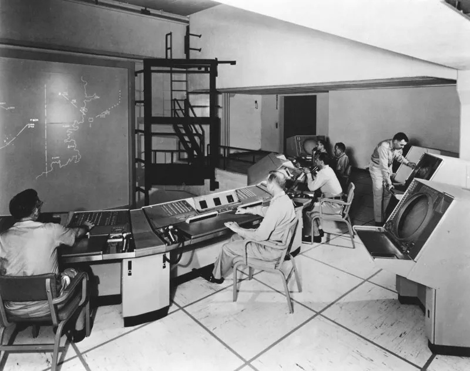
Managerial problem
“With SAGE, we were faced with programs too large for one person to grasp entirely and also with the need to hire and train large numbers of people to become programmers... We were faced with organizing and managing a whole new art.”
Herbert Benington (1956)
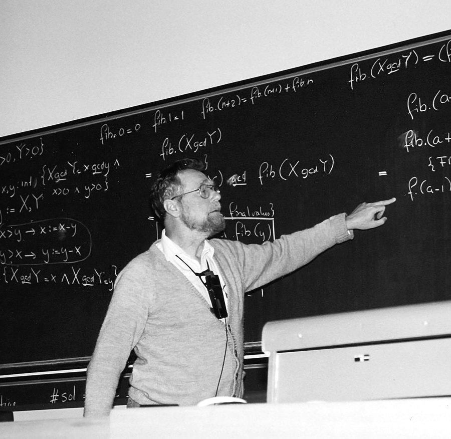
Mathematical science
“Program testing can be used to show the presence of bugs, but never to show their absence!” Rather than verifying programs through their testing, we should prove them correct.
Edsger Dijkstra (1969)
Software engineering
“The phrase software engineering was deliberately chosen as provocative... We undoubtedly produce software by backward techniques.”
The black art of programming has to make way for the science of software engineering!
NATO Conference on Software Engineering (1968)
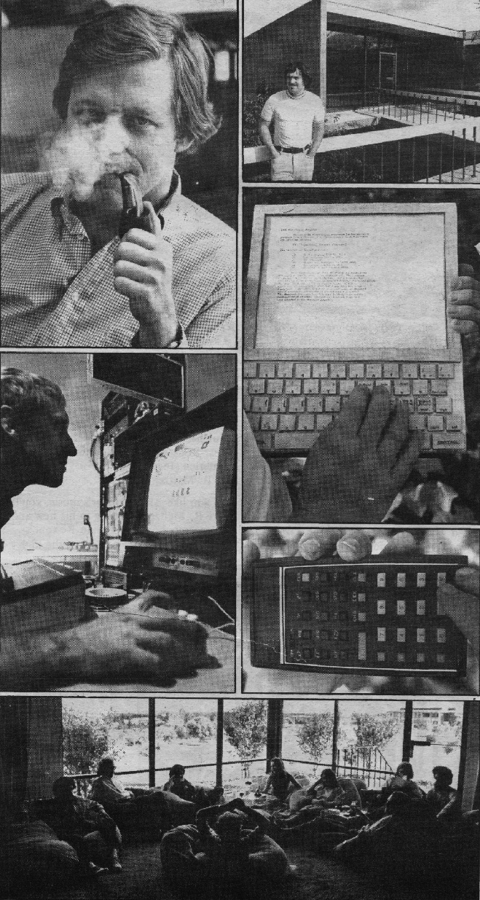
Humanistic problem
“Alan Kay is more interested in us kids. He repudiates the manipulative arrogance .. and serves the dictum of Seymour Papert, Should the computer program the kid or should the kid program the computer?”
Brand, Rolling Stone (1972)
History
Cultures of programming view
- Cultures emerge early in the history
- Unique values, views, methods, aesthetics
- Stable over history of programming
- Not always shared communities
- Inherently pluralistic discipline?
Mathematical
Program as a mathematical entity
eniac programming / plugging cables
numerical analysis
program as a mathematical entity
analysis of program correctness
establishing CS in academic context
"science of automobiles"
Algol - object of beauty
[algorithms ACM]
reference language implementation language publication language
somewhat formal definition
other achievements
algol CompCert and sel4 complexity theory theory of programming languages type systems!
Hacker
The hands-on imperative
direct engagement
batch
hackers at MIT
TX-0 and PDP-1
community of tinkerers
TechModelRailwayClub(TMRC) "hackers"
HAKMEM
from pseudo-Gaussian distributedrandomvariableto an electrical circuit for an amplifier (“submitted without further explanation or cautions”).
information sharing (ARPANET)
exploring possibilities (Spacewar!)
only skill matters not“boguscriteriasuchasdegrees,age,race, sex,orposition.”
UNIX and C and politics (GNU)
Managerial
Software development lifecycles
x
Engineering
A Proper engineering discipline
x
Humanistic
New Media for Thinking
x
Collaborations
The birth of programming languages
Programming language
Programming before
- Direct machine control
- Plugging cables in ENIAC
- Idiosyncratic machine codes
Remarkable idea!
- New framing metaphor
- New formal models
- Implementation techniques
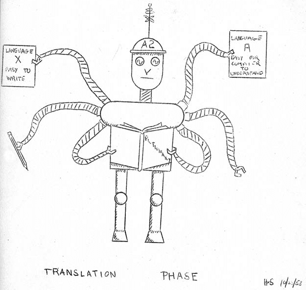
Mathematical culture
Translation metaphor for programming (1950s)
From human language to formal logic and linguistics
Formal grammars for language description
Hacker culture
Clever tricks (1950s)
External form allows subroutine libraries
Interpretive routines for extra EDSAC codes
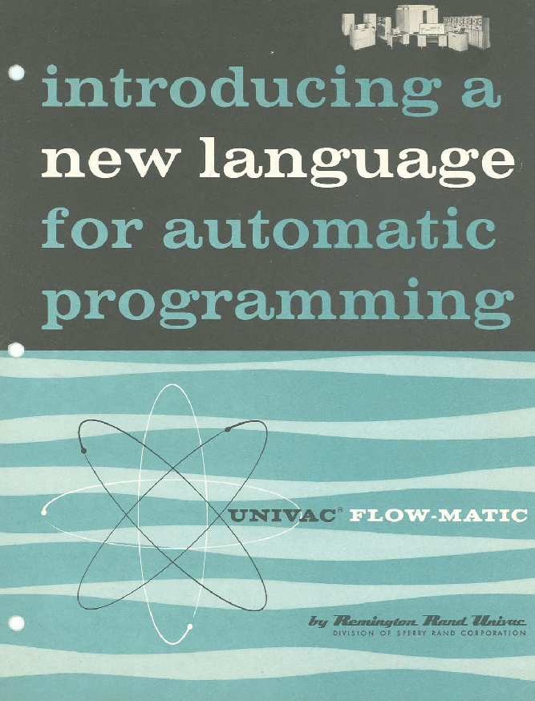
Managerial need
User groups and computer installation managers
Common universal notations
Cross-machine compatibility
Allow program exchange
Teaching at universities
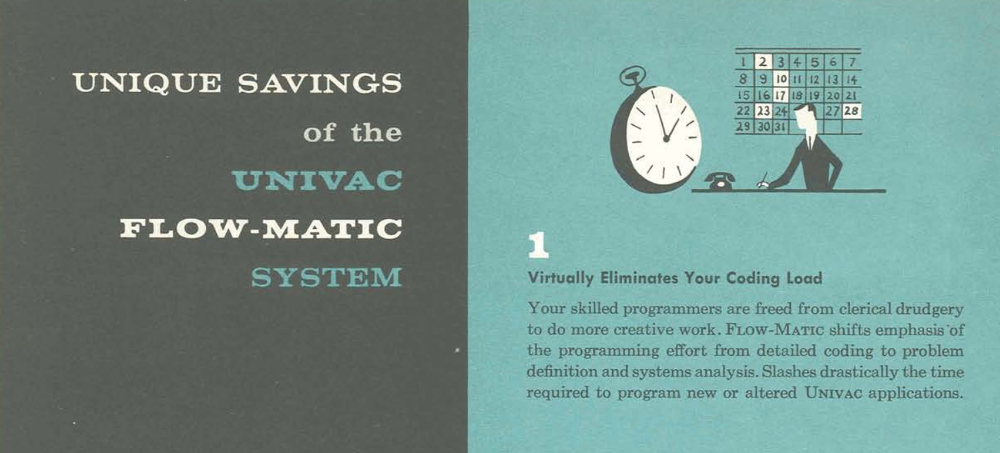
Limits of collaboration
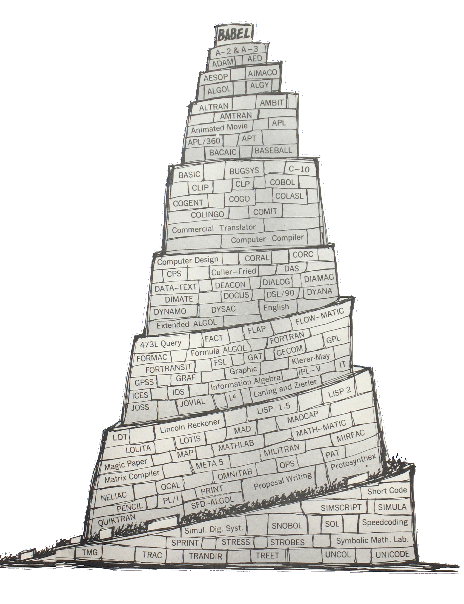
Meeting of cultures but...
- COBOL for managerial business use
- Algol for mathematical theory
- LISP for AI hackers
Boundary object
- Shared understanding, but not focus
- Exchange of ideas between cultures
- Failure of universal languages
Aesthetics
Disagreements on values
float Q_rsqrt( float number )
{
long i;
float x2, y;
const float threehalfs = 1.5F;
x2 = number * 0.5F;
y = number;
// evil floating point bit level hacking
i = * ( long * ) &y;
// what the fuck?
i = 0x5f3759df - ( i >> 1 );
y = * ( float * ) &i;
// 1st iteration
y = y * ( threehalfs - ( x2 * y * y ) );
// 2nd iteration, this can be removed
// y = y * ( threehalfs - ( x2 * y * y ) );
return y;
}
What code is beautiful?
Hacker culture
Values clever code that shows understanding of the machine operation
#define submerge const char*_=O%239?" ":"\t;\t";O*=2654435761;int
#define _cOb8(...) int s,on,__VA_ARGS__;int main(int O, char**Q)
_cOb8(o_, _oO8ocQOcOb, _ocQbo8oo, _oO8ocOb_
){ ; { ;;; ;;} ;{
;; ;{ ; } {;;}
} float the;; static things ;; for (;;){ us :;;
; ; break; the; ;; long grass ;unsigned squall ; }
{ } ; while (1){soft:; submerge us;; in: sleep (0) ;
; ; printf (_); quietly :on ;; the; soil:; };
{{ }; ; ; ;; ;{ ; }; {
{ ; shake: time (1) ;register *_, the =clock(s );
;} ; volatile *_, winds ; ; double wills ;{
; char the ,* fire ;; short companion,*_;}
; { union {}*_, together ;; ; void *warms ;}
} ;; ;{; ;} ; ;;
; ; if (1) wet :; raise (1); struct{}ure ;; ;
; ; free (0);for(;;){ newborn :; ; daughter :; ;
;{ ; extern al, ** world ,*re;const ructed ;};
; ; ; continue;on:;; floods :; ; of: water :;};}
; ;{ ; ; ;; { ; ; } ; } ; ; }
Beautiful code
Humanistic culture
Use double coding to speak to the human as well as
to the machine
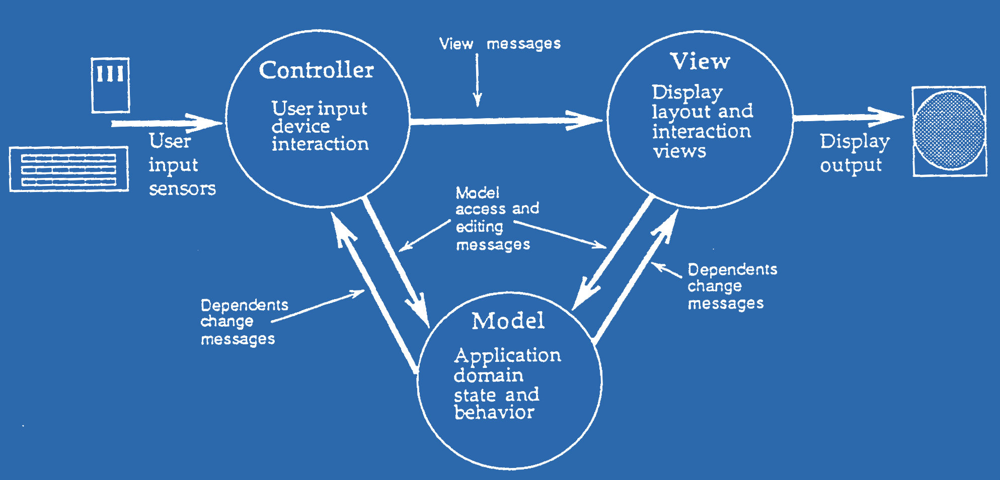
What code is beautiful
Engineering culture
Simple, well-structured. Readability is valued more than cleverness.
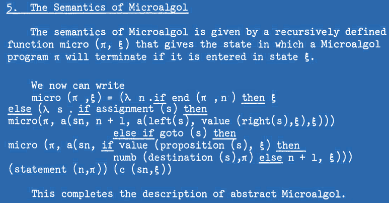
What code is beautiful
Mathematical culture
Code achieves great expressivity using a combination of small number of orthogonal features.
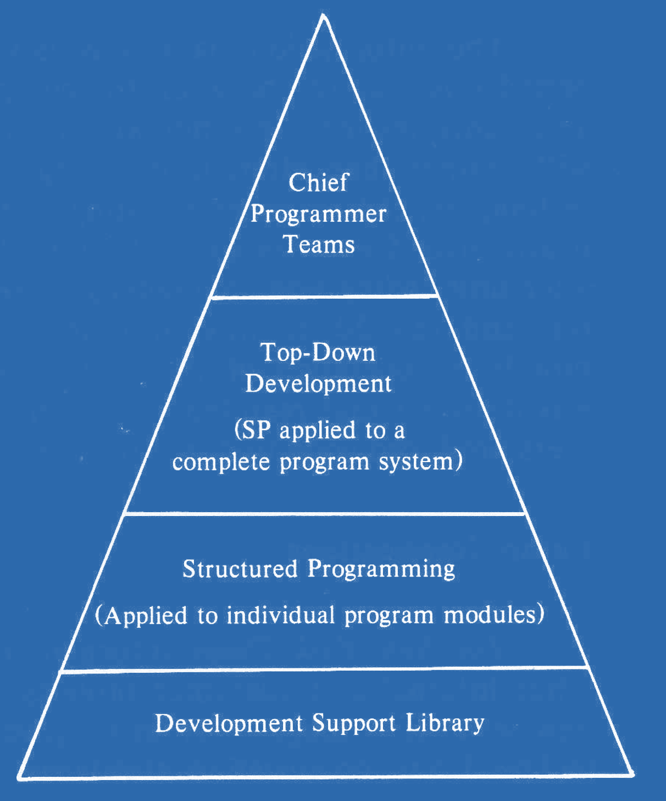
What code is beautiful
Managerial culture
Structure of code enables appropriate organization of development teams and project management.
Aesthetics
Materiality of programming
- Code matters for hackers and humanists
- For mathematicians code is just maths
- Engineers value code quality and structure
- Code is secondary for managerial culture
Clashes
Struggle for control over a concept
Object-orientation
Struggle for control over a concept
- 1960s - Mathematical simulations in Simula
- 1970s - Personal dynamic media in Smalltalk
- 1980s - From Smalltalk to C++ and Java
- 1990s - UML and new development processes
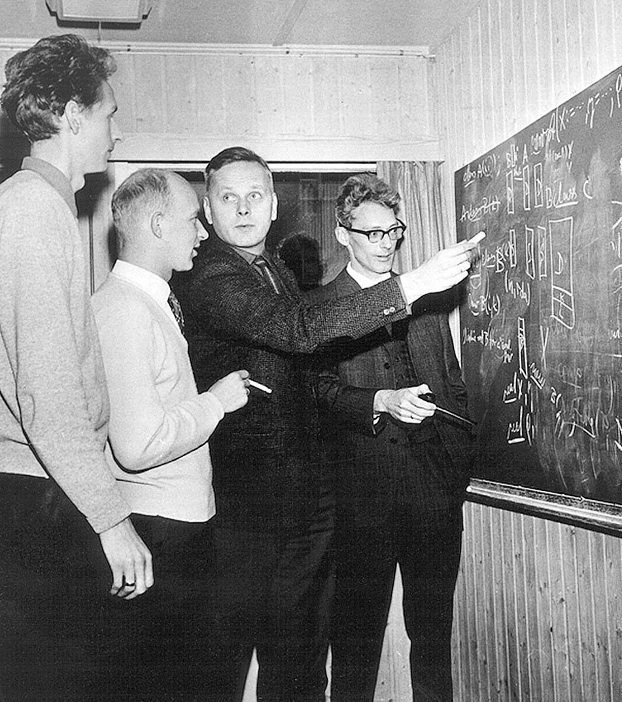
SIMULA "1"
Activity declarations
and processes
Remote accessing
SIMULA 67
Classes and objects
Record handling inspired by Hoare
Three cultures of Smalltalk
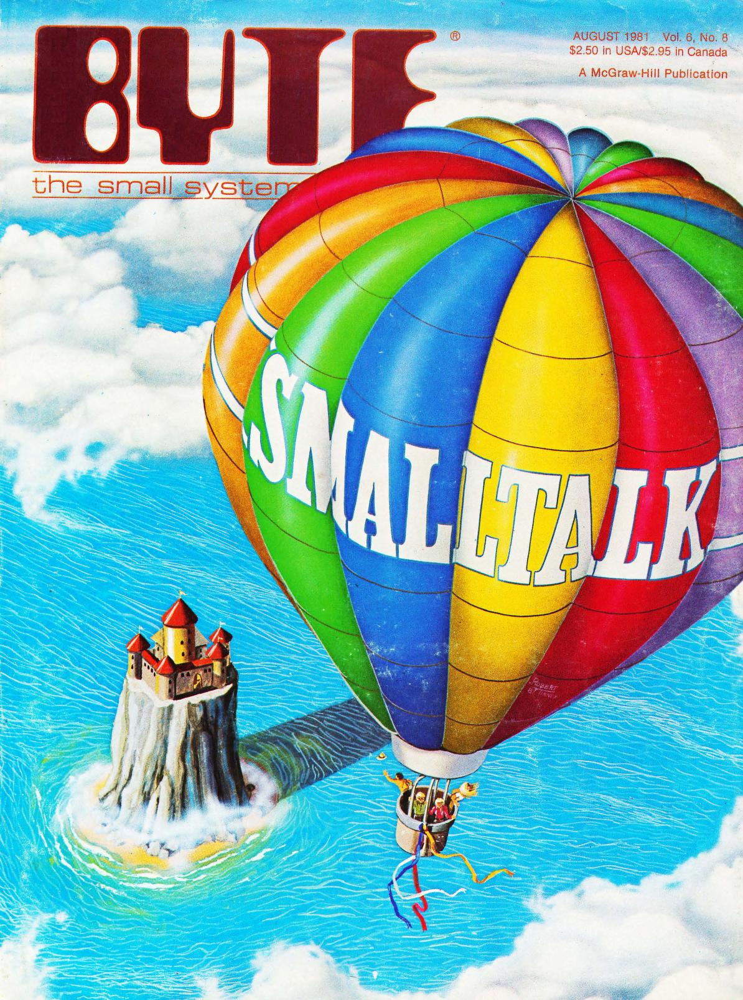
Humanistic (early 70s)
"Computer for Children of All Ages"
Learning and educational focus
Hacker (late 70s)
Experimentation tool at Xerox PARC
Engineering (80s-90s)
From Tektronix to IBM Visual Age
Test-driven development, design patterns
Object-oriented methodology
How do you design
software using objects?
Objects as active actors
Responsibilities of objects
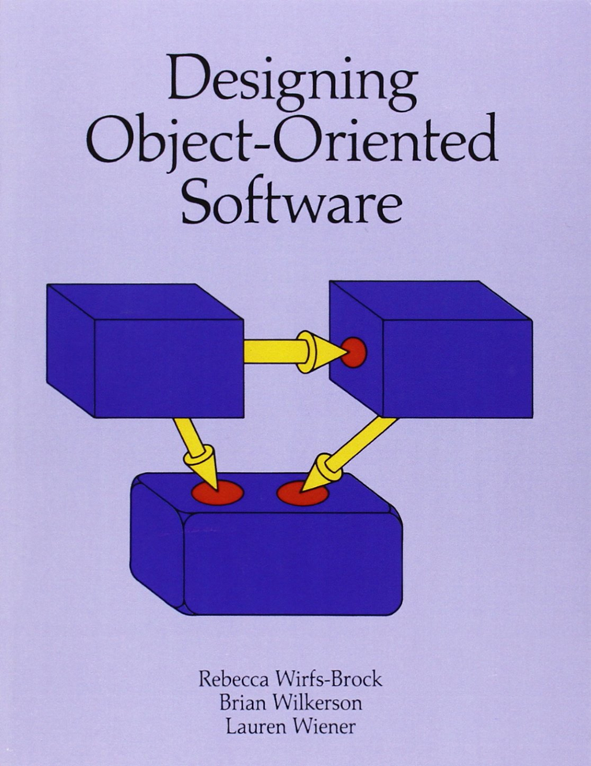
From objects to software development processes
Objects support requirements analysis, team structuring
Object-orientation
Disagreements and struggles for control
- What is object-orientation about
- Software malleability and openness
- Help programmers vs. manage programmers
- Degree of incommensurability
Conclusions
Cultures of Programming
Cultures of Programming
All models are wrong, but some are useful
Framing history and current debates
Programming is a pluralistic enterprise
Tomas Petricek, Charles University, Prague
tomas@tomasp.net |
tomasp.net
Open-access book and exhibition
Available at tomasp.net/cultures
Bonus slides
Collaborations
The history of programming with types
History of types
- 1903 - Avoiding logical paradoxes (Russell)
- 1956 - Numbers in two modes (FORTRAN)
- 1957 - Data description cards (FLOW-MATIC)
- 1974 - Abstract data types (Clu)
- 1978 - Meta-language for a theorem prover (ML)
- 1989 - Types in proof assistants (Alf and Rocq)
- 2012 - Unsound type systems (TypeScript)
Types in programming
FORmula TRANslator
rather than a language
Arguments in fixed or
floating-point mode
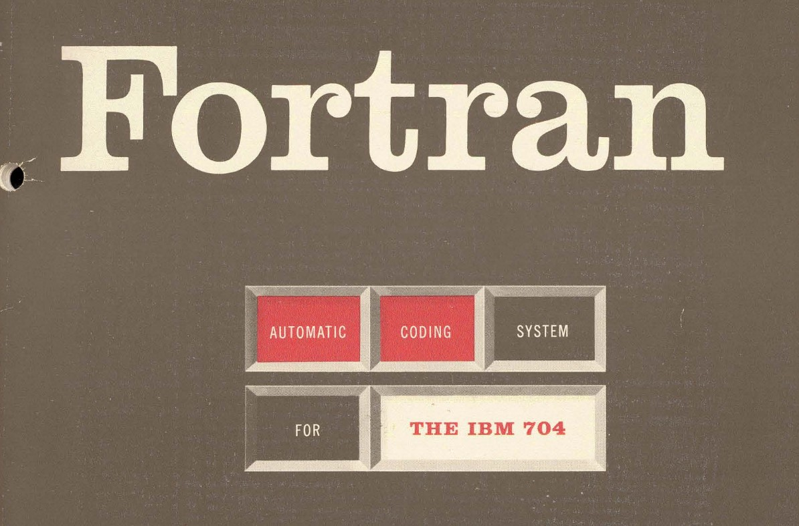
Algorithmic Language
Types (integer, real, Boolean) denote properties of values;
Subscripts for arrays
IBM COMTRAN
Electronic versions of paper-based records
Data records with specific string formatting
Towards a universal language
Mathematical models
- Data spaces (McCarthy, '59)
- Product \(A \times B\), union \(A \oplus B\)
- Set-theoretical types (Hoare, '72)
Types in Algol 68
- A long and difficult struggle
-
Whereas ALGOL 60 has values of [three types],
ALGOL 68 features an infinity of “modes”.
From mathematics to engineering
Lambda-calculus models (Morris '69)
Models type checking via derivation rules
Types are not sets (Morris '73)
Authentication and secrecy problems
Now in Cedar system at Xerox PARC
Abstract data types (Liskov '74)
Type checking done at runtime in Clu
Cites Reynolds ("personal communication")
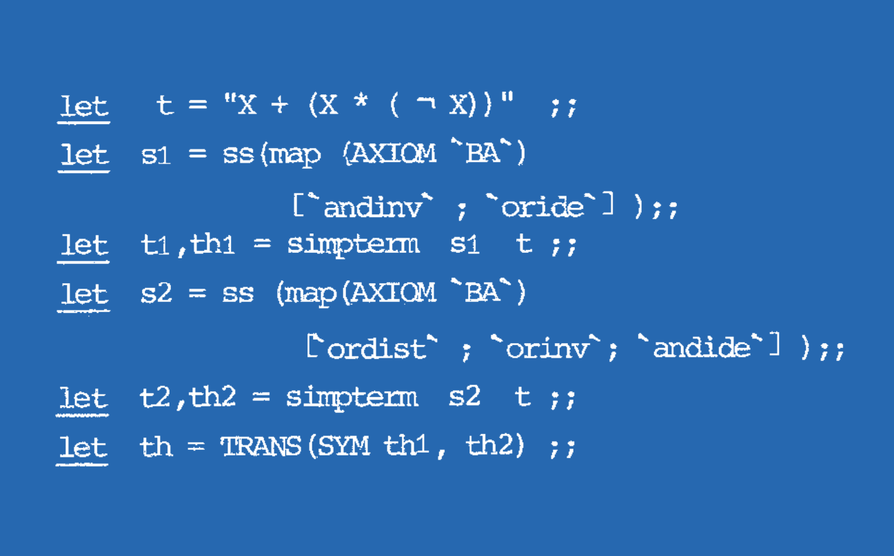
LCF/ML (1978)
Abstract data types
for proof terms
Data types
for convenient programming
Type checking
for proof correctness
Types
Cultural reconciliation at last...?
- Proof assistants and dependent types
- Type providers and data as types
- Modelling types as relations
- Unsound type systems for the real world